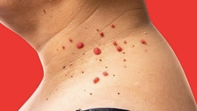
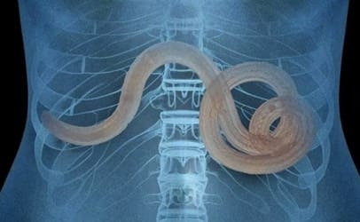
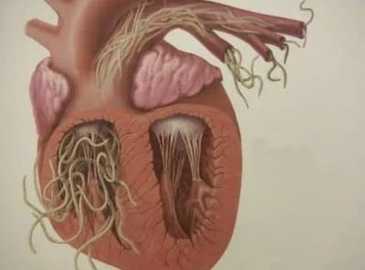
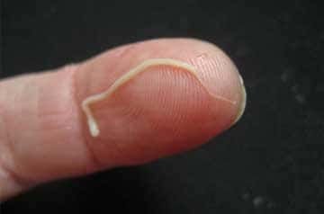

BRODAWKI POWSTAJĄ W WYNIKU OBECNOŚCI PASOŻYTÓW W TWOIM ORGANIZMIE!
JEŚLI MASZ BRODAWKI NA SZYI, POD PACHAMI I W INNYCH MIEJSCACH – PASOŻYTY
POŻERAJĄ CIĘ OD ŚRODKA!
Komentarze: 194
Jeżeli ktoś ma brodawki na skórze, oznacza to, że kolonia śmiercionośnych pasożytów zagnieździła się
w jego organach wewnętrznych i powoli pożera tkanki.
Według statystyk ponad miliard osób cierpi na zakażenie pasożytnicze.
Najtrafniejsze diagnozy stawiane są w oparciu o wysyp brodawek.
Na wasze pytania odpowiada: Lidia Dąbrowska
Specjalista - Dyrektor Instytutu Naukowego Badań Parazytologicznych.
Ponad 20 prac naukowych z zakresu parazytologii molekularnej. Wykonuje
zlecenia z zakresu diagnostyki molekularnej leiszmaniozy.
Doświadczenie zawodowe: ponad 25 lat.
Słowo od Redakcji: Naukowy Instytut Badań Parazytologicznych odkrył prawdziwą przyczynę
brodawek na ludzkiej skórze: infekcję pasożytniczą.
Niedawno przeprowadzone badania wykazały, że produkty metaboliczne pasożytów są toksyczne i tworzą w
żołądku środowisko idealne dla rozwoju bakterii. Właśnie z tego powodu osoby zarażone pasożytami
mogą obserwować, że na ich skórze pojawiają się brodawki.
Omówimy ten problem natury medycznej z Lidią Dąbrowską.
Dzień dobry, Pani Dąbrowska. Zacznę od najważniejszego pytania: Czy to prawda, że większość populacji
w Polsce jest zarażona pasożytami?
Tak. Zajmujemy jedną z czołowych pozycji, jeśli chodzi o zarażenia pasożytami. Przyczyną są ekstremalnie
kiepskie warunki ekologiczne, brak działań ze strony władz oraz obojętność ludzi.
Co roku miliony ludzi umierają na choroby wywołane przez pasożyty. A jednocześnie, jeśli spojrzymy na
ich akty zgonu, to nie ma tam wzmianki o śmierci z powodu zarażenia pasożytami. Wyjątków jest bardzo
niewiele, a generalnie chodzi tu o sytuacje, gdy nie da się zignorować zakażenia, np. kiedy dochodzi do
zablokowania serca przez robaki. Lokalnym przedstawicielom administracji medycznej nie opłaca się
przyznać, że mamy do czynienia z bardzo wysokim poziomem zarażenia społeczeństwa i wolą ignorować fakt,
że przyczyną około 60% zgonów są właśnie pasożyty. Ponadto choroby wywoływane przez pasożyty zmuszają
ludzi, by zgłaszali się do klinik po kosztowne środki. To olbrzymi rynek. Mam nadzieję, że zdołacie
wyczytać moje intencje pomiędzy wierszami.
Pani Dąbrowska, czy brodawki to rzeczywiście oznaka zarażenia pasożytami?
Tak. Kilka grup badawczych potwierdza tezę, że produkty wydalane przez pasożyty przyczyniają się do
powstawania brodawek na ludzkiej skórze. Dodatkowo, jeżeli zobaczymy na naszej skórze brodawki, oznacza
to, że pasożyty już się w nim zagnieździły i aktywnie składają jaja. Dlatego też każda osoba, która ma
brodawki na swoim ciele, znajduje się w śmiertelnym niebezpieczeństwie.

A przypominam, że około 60% wszystkich zgonów, w tym z tak zwanych „przyczyn naturalnych”, wywołuje
tylko jeden czynnik – pasożyty, powoli zjadające daną osobę od środka.
A więc pasożyty to przeważnie robaki, które mogą wywoływać brodawki, pojawiające się na skórze? Jak
to możliwe, że mogą być przyczyną śmierci?
Tak naprawdę dużym błędem jest sądzić, że pasożyty to jedynie robaki. Istnieje ogromna liczba
przeróżnych gatunków pasożytów, które mogą zamieszkiwać różne organy i wywoływać bardzo zróżnicowane
konsekwencje. Ponadto robaki lub też helminty są całkiem groźne. Dosłownie niszczą jelita, które gniją i
w rezultacie człowiek umiera. A nawiasem mówiąc, helminty są trudne do wykrycia i wyplenienia.
Oprócz nich istnieją tysiące pasożytów, które mogą żyć w wątrobie, mózgu, płucach, we krwi i w żołądku.
I niemal wszystkie są śmiercionośne. Niektóre z nich natychmiast zaczynają agresywnie niszczyć ciało
ludzkie. Inne pasożyty żyją niezauważenie do momentu, gdy ich liczba jest już tak ogromna, że ciało nie
jest w stanie sobie z nimi radzić i człowiek umiera. Wywołują one szereg śmiertelnych komplikacji: atak
serca, rak, marskość wątroby, zapalenie nerek, gnicie nerek itp.
Jednocześnie mogę z całą pewnością powiedzieć, że praktycznie każdy jest zarażony pasożytami. Problem
polega na tym, że niektóre z nich bardzo ciężko zlokalizować. A gdy efekty zarażenia pasożytami stają
się widoczne, specjaliści próbują się ich pozbyć. Nawet w trakcie autopsji, obecność pasożytów trzeba
potwierdzić specjalnymi testami. Przynajmniej w większości przypadków.
Jednym uniwersalnym objawem, który pozwala trafnie postawić diagnozę o obecności pasożytów w organizmie
ludzkim, są brodawki.
Czy może Pani podać kilka konkretnych przykładów zarażenia pasożytami?
Mogłabym opowiedzieć o tysiącach przypadków. Ale może skupię się na tych, które najlepiej obrazują
zagrożenia, jakie niesie ze sobą zarażenie pasożytami.
1. Przypadek z dobrym zakończeniem. Pacjent narzekał na sporadyczne bóle brzucha. Badania pokazały, że
całe jego jelita były po brzegi wypełnione robakami. Dosłownie przekopały tam sobie labirynt, zaczął się
proces degeneracji tkanek, a pacjent stanął na krawędzi sepsy. Podczas operacji konieczne było usunięcie
odcinka jelita, a robaki usunięto wraz z rozkładającymi się tkankami. Po tygodniu intensywnej terapii
pacjent poczuł się lepiej.

2. Macica zarażona kolonią pasożytów. Niestety usunięcie ich nie było już możliwe, ponieważ pasożyty i
ich larwy całkowicie wypełniły macicę tej pacjentki i kilkukrotnie powiększyły jej rozmiar. Dlatego
konieczne było jej usunięcie. Kobietę udało się uratować. Zatrucie organizmu było jednak tak dalece
posunięte, że musiała poddać się specjalistycznemu leczeniu po usunięciu macicy i niestety zmarła 3 lata
później.
3. Bąblowica serca. Chorobę wykryto zbyt późno. Lekarz prowadzący uważał, że ten pacjent cierpiał po
prostu na chorobę wieńcową serca i dławicę piersiową, ale prawda była o wiele okrutniejsza. Operacja nie
pomogła, leczenie zachowawcze także. Nie podziałał także przeszczep serca – bo nie znalazł się dawca. W
efekcie pacjent zmarł, nie odzyskawszy przytomności.

Jak możemy sprawdzić, czy jesteśmy zarażeni pasożytami?
Niestety nie istnieją metody, które pozwalają z całą pewnością zdiagnozować, czy w organizmie ludzkim
znajdują się pasożyty, czy też nie. Częściowo ze względu na to, że istnieje tak wiele typów pasożytów
(ponad 2000 znanych gatunków), a częściowo z uwagi na fakt, że są tak trudne do wykrycia. Pełne badanie
na obecność pasożytów można przeprowadzić w zaledwie kilku miejscach w Polsce i jest to bardzo
kosztowne.
Pierwsze objawy, które wskazują na obecność pasożytów w organizmie to:
- brodawki, - nieświeży oddech, -
alergie (wysypki, łzawiące oczy i katar), - wysypka i
zaczerwienienie skóry, - częste przeziębienia, ból gardła, zatkany
nos, - chroniczne zmęczenie (szybko się męczysz bez względu na to,
co robisz), - częste bóle głowy, -
zaparcia lub biegunki, - bóle mięśni i stawów, - nerwowość, bezsenność i zaburzenia apetytu, - ciemne kręgi i
worki pod oczami.
Jeżeli zauważycie u siebie przynajmniej jeden z tych objawów, to szansa na to, że na waszym organizmie
żerują pasożyty wynosi 73%. I należy się ich pozbyć tak szybko, jak to możliwe!
Jak możemy się chronić i pozbyć pasożytów?
Jeśli chodzi o dostępność środków na pasożyty, to obecna sytuacja jest dość problematyczna. Oczywiście
istnieją wysoce wyspecjalizowane środki, które oczyszczają organizm z robaków. Są także bardziej lub
mniej
skuteczne środki zwalczające pewne rodzaje robaków lub pasożytów atakujących wątrobę. Główny problem
polega jednak na tym, że oddziałują one jedynie na jeden konkretny typ pasożyta. Natomiast każda osoba
jest nosicielem co najmniej 7–8 gatunków pasożytów. Patrząc na uśrednione dane, widzimy, że każda
zarażona osoba jest nosicielem 11–14 typów pasożytów.
Na dzień dzisiejszy istnieje tylko jedno rozwiązanie, które pozwala pozbyć się pasożytów. Jest to
suplement przeciwpasożytniczy o nazwie . Badania
przyniosły wspaniałe rezultaty. Eksport tego środka jest wstrzymany do momentu, aż zostanie on
rozdystrybuowany w całej Polsce.
Co sprawia, że jest taki
wyjątkowy? Jaka jest
różnica pomiędzy tym środkiem a innymi
produktami przeciwpasożytniczymi?
Jak już wspomniałam, na dzień dzisiejszy, jest to jedyny skuteczny środek przeciwpasożytniczy na całym
świecie. Pomaga całkowicie pozbyć się pasożytów. Dlatego jest tak pożądany przez międzynarodowe sieci
aptek i firmy farmaceutyczne. W porównaniu do innych środków przeciwpasożytniczych, działa bezpośrednio
na
szeroką gamę pasożytów, które mogą zainfekować całe ciało. Biorąc pod uwagę trudności diagnostyczne,
warto zauważyć, że ten środek pozwala skutecznie oczyścić cały organizm. Wspominałam już wcześniej, że
wykrycie gatunku pasożytów, który zainfekował organizm, jest prawie niemożliwe. A niszczy i
usuwa wszelkie pasożyty, żyjące w dowolnym organie wewnętrznym – od mózgu, poprzez serce i wątrobę,
po jelita. Żaden inny dostępny dziś środek nie jest w stanie tego uczynić.
Poza tym nie jest to środek o chemicznym składzie, ale produkt całkowicie naturalny, co eliminuje ryzyko
wystąpienia reakcji alergicznych, zaburzeń flory bakteryjnej w jelitach oraz innych problemów, które
mogą pojawić się, podczas stosowania klasycznych pigułek oraz zmuszania organizmu do przetwarzania
wielu syntetycznych substancji.
WAŻNE!
Producent uruchomił właśnie specjalną promocję, w ramach której środek ten można nabyć 50% taniej!
1. Skuteczność
obliczono przy użyciu
standardowych technik (stosunek przypadków
eliminacji problemu do całkowitej liczby badanych w grupie 100 osób, które stosowali ten
środek):
- usunięcie pasożytów i jaj: 99%, - uregulowanie funkcjonowania i poprawa stanu
trzustki: 65%, - usunięcie alergicznego zapalenia skóry: 67%, - usunięcie
zapalenia błony śluzowej żołądka, wrzodów i biegunki: 53%, - usunięcie anemii: 71%,
- usunięcie brodawek i narośli: 79%.
2. Nie odnotowano negatywnych skutków
ubocznych, w tym reakcji alergicznych.
3. został uznany za wiodący środek
w
walce z pasożytami w organizmie ludzkim.
Środek ten uzyskał certyfikację nie tylko w Polsce, ale także w całej Europie na Uniwersytecie
Parazytologii w Paryżu. Badania w pełni potwierdziły dane uzyskane w Polsce. Francuzi
uzyskali nawet wyższy odsetek wyleczonych pacjentów. Obecnie cykle badań dobiegają także
końca w Chinach, Japonii i Wietnamie. Kraje azjatyckie wykazują ogromne zainteresowanie tym
środkiem. Wszelkie testy bez wyjątku wykazały niebywałą skuteczność tego produktu.
Myślę, że nasi czytelnicy chcieliby wiedzieć, gdzie można kupić w promocyjnej cenie?
Wraz z producentem
uruchomili program zniżek dla
wszystkich polskich obywateli. Pracownicy Instytutu utworzyli specjalne centrum dystrybucji i
dostarczyli niezbędną ilość produktu.
Zaczekać na telefon konsultanta, który odpowie na wszystkie pytania. Podać mu adres dostawy.
W ciągu 5−7 dni przyjedzie kurier z paczką.
Jeżeli zobaczycie, że wciąż dostępna jest opcja przesłania żądania kontaktu, oznacza to, że środek
ten jeszcze jest dostępny do zamówienia. Osobiście gwarantuję, że wszystkie osoby, które prześlą
żądania poprzez stronę internetową, otrzymają swoje zamówienia.
Jak długo potrwa promocja?
Promocja będzie ważna do wyczerpania zapasów. Ale chcę cię natychmiast ostrzec, że opakowań w cenie
129zł pozostało bardzo
niewiele. Zamówień wciąż przybywa. Klienci nasz polecają, swoim znajomym i
krewnym.. Nawet nie spodziewaliśmy się, że informacja o rozprzestrzeni się tak szybko.
Pani Dąbrowska, czy chciałaby Pani jeszcze coś przekazać naszym czytelnikom, zanim zakończymy
wywiad?
Jedyne co chciałabym powiedzieć, to dbajcie o zdrowie. Możecie tego nawet nie podejrzewać, ale
prawdopodobieństwo, że pasożyty żyją w was wynosi 60–65%. Mogą być wszędzie – we krwi, jelitach,
płucach, sercu, mózgu. Pasożyty dosłownie pożerają was od wewnątrz, jednocześnie zatruwając wasze
ciała. W efekcie pojawia się mnóstwo problemów, które mogą skrócić życie o 15–25 lat. Nie wspomnę
nawet o problemie nagłego zgonu, który zwykle następuje w wyniku działań pasożytów w organizmie. Nie
czekajcie, aż będzie za późno. Już teraz oczyśćcie swój organizm.
Ważne! Wykazano, że
to najlepszy moment na rozpoczęcie stosowania. Efekt działania tego środka zwiększa się. Poprawa
stanu zdrowia następuje 47% szybciej niż w innym czasie w ciągu roku.
194 komentarze dodane dziś
Anna Fabiańska
Wypróbowałam ten produkt. Miałam mnóstwo brodawek na szyi i
pod pachami. Po pięciu dniach widziałam, że jest ich coraz mniej. Mój żołądek także
zaczął lepiej funkcjonować.
1 godzinę temu
Ania Rawecka
Ja też zamówiłam dla siebie . Kurier przywiózł
następnego dnia. Miałam dużo brodawek na szyi. Zaczęłam stosować i... nie macie pojęcia,
co zaczęło ze mnie wyłazić. W życiu nie przypuszczałam, że w moich jelitach może
siedzieć taka ilość żyjątek... Wolę już o tym nie myśleć... to prawdziwy koszmar.
1 godzinę temu
Andrzej Jankowski
Bardzo dziękuję! Gdy zaczynałem brać , nie wyobrażałam
sobie, że mogę osiągnąć taki efekt. Ból brzucha już zniknął (chyba coś tam we mnie
żyło), a wraz z nim bezdech i brodawki. Teraz, mając 53 lata, czuję się lepiej niż
jakikolwiek 30-latek. Dziękuję, że o mówicie ludziom o tym problemie. Od specjalistów od
terapii
na pewno nie usłyszą takich ważnych informacji.
1 godzinę temu
Lidia Dąbrowska:
Andrzeju, dziękuję za pozytywną opinię.
Pozdrawiam,
Lidia Dąbrowska
1 godzinę temu
Aleksander
Sam wypróbowałem .
Efekt jest po prostu niesamowity.
Czuję się młody i zdrowy. Mój układ odpornościowy znacznie się wzmocnił przez 8
miesięcy, które minęły, odkąd poddałem się kuracji. Od tamtej pory nic mi nie dolega! O
takich efektach mogłem jedynie pomarzyć. Polecam z całego serca.
1 godzinę temu
Grzegorz Barańczak
Ostatnio oglądałem dokument na Polsacie o pasożytach.
Wspomnieli o tym produkcie. Mówili, że to najlepszy suplement przeciwpasożytniczy na
świecie.
1 godzinę temu
Natalia Wilczyńska
Właśnie złożyłam zamówienie. Paczka powinna przyjść w ciągu
tygodnia. Nie mogę się doczekać!
1 godzinę temu
Ada Brecka
Miałam koszmarne migreny i brodawki. Przez kilka tygodniu
brałam i moje
problemy zniknęły. Teraz nie
mogę przestać myśleć o tym... Co tam
żyło?
1 godzinę temu
Anna Bagińska
Babcia nauczyła mnie, jak pozbyć się pasożytów dzięki
piołunowi. Moja cała rodzina pije napar i, wiecie co, to działa! Ale... nie pomaga na
brodawki. Zamówiłam i już nie mam problemów
z brodawkami! I daliśmy sobie na
spokój z gorzkim naparem i zaczęliśmy stosować . Działa tak samo, cena jest bardzo
przystępna, a i stosuje się znacznie łatwiej. A teraz jeszcze jest promocja.
1 godzinę temu
Michał J.
Bardzo interesujący wywiad, dzięki! Otwieracie ludziom oczy!
1 godzinę temu
Ula Czaplińska
A co jeśli to ściema? Czemu sprzedają to tylko przez internet?
1 godzinę temu
Edward Tomaszewski
Zgadzam się ze wszystkimi komentarzami. Gdy zacząłem brać te
kapsułki, wylazły ze mnie obrzydliwe robaki. Spanikowałem i poleciałem do specjalisty.
Rzucił okiem i powiedział, że to była motylica wątrobowa. I gdyby nie zabiłyby
mnie w 2-3 lata.
1 godzinę temu
Łukasz Borawiecki
Ula, czytałaś w ogóle ten artykuł? O jakim oszustwie mówisz,
skoro płatność jest przy odbiorze? Zamówiłem i suplement przyniósł kurier. Wszystko
sprawdziłem, a potem zapłaciłem. Teraz wszystko sprzedają w internecie, od ciuchów i
butów po różne sprzęty i meble.
1 godzinę temu
Janusz Tuczyński
Super produkt. Braliśmy go razem z żoną i nasze zdrowie
znacznie się poprawiło. Czujemy się młodsi i mamy więcej energii... Jak się człowiek
pozbędzie pasożytów, to jakby się urodził na nowo!
1 godzinę temu
Aleksander B.
Po przeczytaniu komentarzy też postanowiłem zamówić :)
1 godzinę temu
Maria Wałkowiecka
Nie uwierzycie, ale też miałam takie problemy: wieczny brak
sił... już miałam się poddać, ale dzięki Bogu, dowiedziałam się o to naprawdę
wspaniały środek.
1 godzinę temu
Sylwia Adamczyk
Dzięki za radę! Czas oczyścić organizm. Przynajmniej raz w
życiu. Nigdy wcześniej tego nie robiłem, ale myślę, że moje życie będzie lepsze bez
pasożytów :-) Jestem pewny, że je mam. Łatwo je złapać.
1 godzinę temu
Julia Dorotowska
Dziękuję, pani Dąbrowska, że opowiedziała pani o tym środku.
Okropne stworzenia ze mnie wylazły... Fuuuuu
Paczka przyszła bardzo szybko.

1 godzinę temu
Lidia Dąbrowska:
Nie ma za co, pani Julio. Proszę powiedzieć, jak długo Pani
stosowała środek?
Pozdrawiam, Lidia Dąbrowska
1 godzinę temu
Julia Dorotowska
Około 15 dni.
1 godzinę temu
Lidia Dąbrowska:
Dziękuję, pani Julio.
Pozdrawiam, Lidia Dąbrowska
1 godzinę temu
Hania Szymańska
Efekty po prostu przekroczyły moje oczekiwania. Cała kuracja
trwała miesiąc, a ja czuję się 20 lat młodsza.
57 minut temu
Małgorzata Chorowińska
Właśnie wzięłam udział w specjalnym programie. Super
warunki, pospieszcie się! Operator zadzwonił natychmiast i potwierdził zamówienie.
Życie z robakami jest straszne.
55 minut temu
Monika Biskońska
Widziałam ten produkt w aptece, kosztował 1150 zł! Na szczęście
zamówiłam go w promocji na oficjalnej stronie.
48 minut temu
Lidia Dąbrowska:
Moniko, apteki też próbują sprzedawać ten środek. Mnóstwo
zarabiają na zwykłych ludziach.
Pozdrawiam, Lidia Dąbrowska
36 minut temu
Kamila Tropińska
Stosuję już od 2
tygodni. Mam mnóstwo energii. Wcześniej
chodziłam jak na wpół żywa staruszka hehe! Ten środek jest wspaniały!
44 minuty temu
Maks P.
Właśnie złożyłem zamówienie. Mam nadzieję, że przyjdzie.
39 minut temu
Lidia Dąbrowska:
Maks, tak, mamy jeszcze 87 opakowań w magazynie.
Pozdrawiam, Lidia Dąbrowska
36 minut temu
Dorota Słomczyńska
Przeczytałam artykuł i od razu złożyłam zamówienie. Mam niemal
wszystkie objawy, w tym brodawki.
31 minut temu
Maria Borkowska
Powiedzcie, gdzie kupić? Nie ma w aptekach, a trochę się boję
trafić na podróbkę w internecie.
27 minut temu
Lidia Dąbrowska:
można zamówić
wyłącznie na oficjalnej stronie
internetowej. Po prostu kliknij powyższy link! W ramach specjalnego programu,
obecnie jest dostępny w cenie promocyjnej, więc zalecam pośpieszyć się, by nie przegapić
okazji. I, proszę, uważajcie na podróbki.